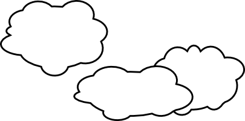
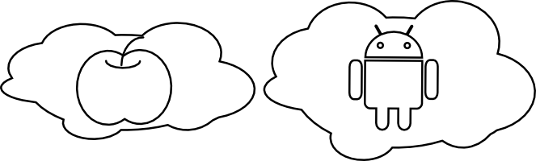
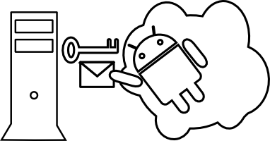
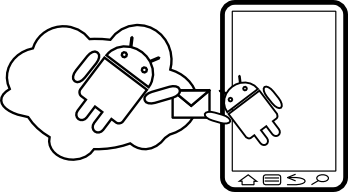
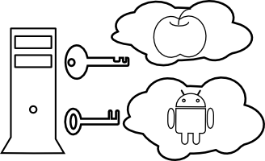
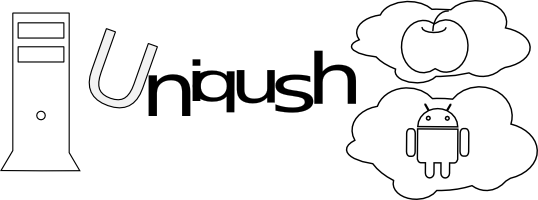
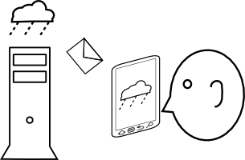
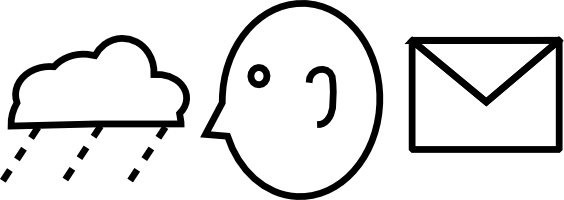
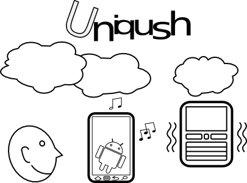

Basic Concept
This document explain some basic concept in Uniqush’s terminology. Understanding these terms is critical to use Uniqush. Fortunately, it won’t be too hard to capture these ideas.
Sending Notifications Through Clouds
- Many clouds are available to push data from a server side program to mobile devices.

- Each cloud is dedicated to its own mobile platform. e.g. a cloud named GCM (or FCM) for Android; a cloud named APNs for iOS, etc.

- If an app server want to send data to its end user, it first sends the data to the corresponding cloud.

-
Then the cloud will delivery the data to the app running on the device.

-
If a server wants to support multiple mobile platforms, it has to communicate with different clouds through different protocols.

Uniqush Gets Involved
- By running Uniqush, the server can send data to multiple clouds through Uniqush using one and only one protocol.
The server program first sends the data to the Uniqush process through HTTP,
then Uniqush will send the data to each cloud using cloud-specific protocols.
We call each cloud a Push Service Provider.
Supporting more platforms is easy for the server side, because Uniqush did all of the dirty work.
- Definition Push Service Provider: An entity which can push data to a device. Uniqush handles protocol to different Push Service Providers, hiding all communication details from the server.

- The serve only need to care about who subscribes to which service. For example, the server may provide weather report service, called Local Weather. Then John installed the Local Weather app on his device and subscribes the service.
- Definition Service: An entity which can generate data ready to be sent to remote device. A service is the source of information.
- Definition Subscriber: An entity which consumes the information generated from the service. A subscriber is the sink of information.

- When server wants to send weather report to John, it needs only to tell Uniqush three things: the Service (Local Weather), the Subscriber (John), and the Data (rain, cloudy, etc.)

- Moreover, John has several cell phones. All of them subscribe the Local Weather service.
He wants each device to be able to receive messages from the server.
We call each device a Delivery Point.
Each subscriber may have several delivery points.
- Definition Delivery Point: An entity which receives data from one or more Services.
It must have an subscriber as its Owner.
One subscriber may have more than one delivery point.
- The server side program could simply tell 3 things to Uniqush: who — the subscriber; where — the service, i.e. where is the subscriber; and what — the data. Uniqush will send data to each delivery point of that subscriber.

Review
Here are important concepts that we mentioned in this document. Understanding these concepts is critical and we listed them here for your convenience.
Push Service Provider
A push service provider can push data to a device. Uniqush handles protocol to different Push Service Providers, hiding all communication details from the server.
Examples: GCM (or FCM) can send notifications to Android devices; APNS can send notifications to iOS devices.
Service
A service can generate data ready to be sent to apps running on remote device. A service is the source of information. One server may provide more than one service.
Examples: Local Weather service; Local News service.
Subscriber
A subscriber consumes the information generated from the service. A subscriber is the sink of information. In most cases a subscriber usually refers to a real person.
Example: A person who installed Local News app on his / her cell phone.
Delivery Point
A Delivery Point receives data from one or more Services. It must have an subscriber as its Owner. One subscriber may have more than one delivery point.
Examples: an Android device; an iOS device; a BlackBerry, etc.